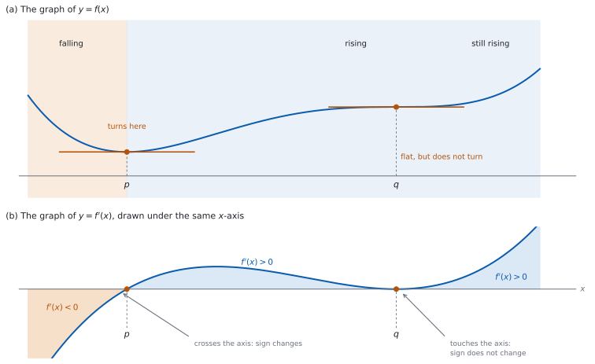
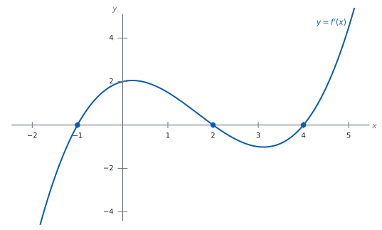

SL 5.2 — Increasing and decreasing functions（増加・減少と導関数の符号）
- increasing（増加）と decreasing（減少）の意味を、グラフの言葉で説明できる。
- \(f'(x) > 0\)、\(f'(x) = 0\)、\(f'(x) < 0\) を、グラフの上がり下がりとして読める。
- 与えられた \(f'(x)\) の符号を調べて、\(f\) が増加する区間・減少する区間を求められる。
- 答えを区間の形で書ける。
- \(f'(x) = 0\) でも、グラフが向きを変えるとはかぎらないことを説明できる。
- \(f'\) の符号表から、\(f\) のようすを読み取れる。
- 場面のある問題で、増える区間・減る区間の意味を述べられる。
The idea
1. 増加と減少
グラフを左から右へたどるとき
| 言葉 | グラフのようす |
|---|---|
| increasing（増加） | 上がっていく |
| decreasing（減少） | 下がっていく |
「増加」と「減少」は、区間についての言葉です。 「ここからここまでで上がっている」という言い方をします。
このページでは \(f'(x)\) が与えられます。 \(f'(x)\) の求め方は SL 5.3 からです。
2. 符号で読む
\(f'(x)\) はその点での接線の傾きでした（SL 5.1）。だから
| \(f'(x)\) | 接線 | \(f\) のようす |
|---|---|---|
| \(f'(x) > 0\) | 右上がり | 増加している |
| \(f'(x) = 0\) | 水平 | stationary point（停留点） |
| \(f'(x) < 0\) | 右下がり | 減少している |
だから、\(f'(x)\) の符号を調べれば、\(f\) の上がり下がりが分かります（図 1）。
\(f'\) を「もとの関数のグラフ」だと思わないでください。 \(f'\) のグラフが \(x\) 軸より上にあることは、\(f\) のグラフが \(x\) 軸より上にあることとは無関係です。
3. \(f'(x) = 0\) のところ
\(f'(x) = 0\) となる \(x\) では、\(f\) のグラフは stationary point（停留点）をもつといいます。接線が水平になる点です。
ここが、増加と減少の境目になることがあります。 ただし、いつもそうとはかぎりません。
境目かどうかは、\(f'\) の符号が変わるかどうかで決まります（図 1 (b)）。
| \(f'\) のようす | \(f\) のようす |
|---|---|
| \(x\) 軸を横切る（符号が変わる） | そこで向きが変わる |
| \(x\) 軸に触れるだけ（符号が変わらない） | 水平になるが、向きは変わらない |
だから、\(f'(x) = 0\) を解いただけでは足りません。 その前後で符号がどうなるかを見ます。
4. 区間で答える
答えは、\(x\) の範囲で書きます。
\(f'(x) > 0\) を解いた範囲では、\(f\) は増加しています。 \(f'(x) < 0\) を解いた範囲では、減少しています。
範囲が \(2\) つに分かれることがあります。 そのときは「\(x < -2\) または \(x > 2\)」のように、\(2\) つとも書きます。英語では increasing for \(x < -2\) and for \(x > 2\) のように書きます（or を使っても通じます）。
停留点で切って書いても、切らずに書いてもかまいません。 \(f'\) が \(1\) 点だけで \(0\) になり、その前後で符号が変わらないときは、\(f\) はその点をまたいで増加しつづけています。 たとえば \(f'(x) = 5x^{4}\) なら、\(x \ne 0\) でつねに正なので、\(x < 0\) と \(x > 0\) と書いても、まとめて「すべての \(x\)」と書いても、どちらも正しい答えです。
場面のある問題では、与えられた範囲の中で答えます。 \(0 \leq t \leq 8\) と書いてあれば、答えもその中に収めます。
5. \(f'\) のグラフから読む
\(f'\) のグラフが与えられたときは、\(x\) 軸との上下だけを見ます（図 1 (b)）。
| \(f'\) のグラフ | 読み取ること |
|---|---|
| \(x\) 軸より上 | その範囲で \(f\) は増加 |
| \(x\) 軸と交わる点・触れる点 | \(f\) の停留点（交われば向きが変わり、触れるだけなら変わらない） |
| \(x\) 軸より下 | その範囲で \(f\) は減少 |
\(f'\) のグラフの山や谷は、\(f\) の山や谷ではありません。 \(f'\) が最大になるところは、\(f\) の傾きがいちばん大きいところです。そこで \(f'\) が正なら、\(f\) がいちばん急に上がっているところです。
6. 「点で増加」とは言わない
「\(x = 3\) で増加している」という言い方は、正確ではありません。 増加・減少は、区間についての言葉だからです。
言うなら \(2\) 通りです。 「\(f'(3) > 0\) である」か、「\(3\) をふくむある区間で \(f\) は増加している」です。
答案では、区間で答えてください。 「\(x > 3\) で増加」のように書きます。
7. 符号表
符号を整理するときは、表を使うと見やすくなります。
\(f'(x) = 0\) となる \(x\) を境にして、区間ごとに \(f'\) の符号を書きます。
| \(x\) | \(x < p\) | \(x = p\) | \(p < x < q\) | \(x = q\) | \(x > q\) |
|---|---|---|---|---|---|
| \(f'(x)\) | \(-\) | \(0\) | \(+\) | \(0\) | \(+\) |
| \(f\) | 減少 | 停留 | 増加 | 停留 | 増加 |
符号は、その区間の中の \(1\) つの値で確かめます。 たとえば \(p < x < q\) なら、その間の値を \(1\) つ選んで \(f'\) に入れます。
区間を区切るのは、\(f'(x) = 0\) となる \(x\) と、\(f'\) が定義されない \(x\) の両方です。 その間では \(f'\) が切れ目なくつながっているので、代表の値 \(1\) つで区間全体の符号が分かります。分母に \(x\) があるときは、分母が \(0\) になる \(x\) も境目にしてください。
\(f'\) の符号を調べるのは、\(2\) 次不等式を解くことがほとんどです。このページの例題と演習は、因数分解が手でできる形にしてあります。
\(f'\) のグラフをかくと、符号の変わる場所が目で見えます。\(x\) 軸との交点を読めば、停留点の \(x\) が分かります。
答案に書くのは、手で出した式と値です。 電卓は、出した答えが合っているかを見るために使ってください。

Why it works
なぜ、\(f'(x) > 0\) だと増加するのでしょうか。 \(f'(x)\) が接線の傾きだからです。
傾きが正の直線は、右へ進むと上がります。曲線も、その点の近くでは接線とほとんど同じ向きに進みます。だから、\(f'\) がある区間でずっと正なら、その区間では上がりつづけます。
区間全体で正であることが要ります。 \(1\) 点だけで正でも、その先で負になれば、区間全体では上がりつづけません。「区間で増加」と言うのは、そのためです。
なぜ、\(f'(x) = 0\) でも向きが変わるとはかぎらないのでしょうか。 \(f'\) が \(0\) になっても、その前後で符号が同じままのことがあるからです。
\(f'\) が \((x - a)^{2}\) の形の因数をもつときを考えます。\(x = a\) で \(f'\) は \(0\) になりますが、\(2\) 乗は負になれないので、\(x = a\) の前後でこの因数の符号は変わりません。 ほかの因数の符号もそこで変わらなければ、\(f'\) 全体の符号も変わりません。グラフは \(x = a\) で一瞬水平になるだけです。
だから、停留点を見つけたら、必ず前後の符号を調べます。 「\(f'(x) = 0\) を解いたら、そこで向きが変わる」とはかぎりません。
なぜ、符号は区間の中の \(1\) つの値で確かめてよいのでしょうか。 \(f'\) が多項式のように切れ目なくつながっているとき、符号が変わるには \(0\) を通る必要があるからです。
\(f'(x) = 0\) の解の間には \(0\) になる点がないので、その区間の中で符号は変わりません。 だから、代表の値を \(1\) つ入れれば、その区間全体の符号が分かります。
この言い方には、\(f'\) がその区間のどの点でも定義されていることが要ります。 途中で \(f'\) が定義されない \(x\) があると、そこで符号が飛ぶことがあります。\(f'(x) = \dfrac{1}{x}\) のように分母に \(x\) があるときは、\(x = 0\) も境目として区間を分けてください。
なぜ、\(f'\) のグラフの高さを \(f\) の高さと混同してはいけないのでしょうか。 別の関数のグラフだからです。
\(f'\) のグラフが \(x\) 軸の上にあることは、\(f\) が上がっているという意味であって、\(f\) の値が正だという意味ではありません。\(f\) の値が \(-100\) でも、上がっていれば \(f'\) は正です。
Worked examples
問題文は英語です。意味が理解できなかったら、問題文の下の「日本語訳」を開いてください。解説は日本語です。
この項目は Paper 1 に出ます。 電卓なしで解ける形にしてあります。
例題 1 For a function \(f\), it is given that \(f'(x) = 3x^{2} - 12\).
(a) Find the values of \(x\) at which \(f\) has a stationary point.
(b) Find the intervals on which \(f\) is increasing and the interval on which \(f\) is decreasing.
日本語訳
ある関数 \(f\) について、\(f'(x) = 3x^{2} - 12\) であることが分かっています。
(a) \(f\) が停留点をもつ \(x\) の値を求めなさい。
(b) \(f\) が増加する区間と、減少する区間を求めなさい。
(a) \(f'(x) = 0\) を解きます。
\[ 3x^{2} - 12 = 0 \quad \Longrightarrow \quad 3(x - 2)(x + 2) = 0 \]
\[ x = -2 \quad \text{または} \quad x = 2 \]
(b) \(3(x-2)(x+2)\) の符号を、\(3\) つの区間で調べます。
| \(x\) | \(x < -2\) | \(x = -2\) | \(-2 < x < 2\) | \(x = 2\) | \(x > 2\) |
|---|---|---|---|---|---|
| \(f'(x)\) | \(+\) | \(0\) | \(-\) | \(0\) | \(+\) |
| \(f\) | 増加 | 停留 | 減少 | 停留 | 増加 |
増加するのは \(x < -2\) と \(x > 2\)、減少するのは \(-2 < x < 2\) です。
検算（代表の値で）。 \(x = -3\) で \(f'(-3) = 27 - 12 = 15 > 0\)、\(x = 0\) で \(f'(0) = -12 < 0\)、\(x = 3\) で \(f'(3) = 27 - 12 = 15 > 0\) ✓ 表の符号と合っています。
検算（グラフの形で）。 \(f'\) は下に開いていない放物線で、根が \(2\) つあります ✓ だから符号は \(+\)、\(-\)、\(+\) の順になります。
検算（境目の数）。 符号が変わる点が \(2\) つあるので、区間は \(3\) つに分かれます ✓ 表の列と合っています。
検算（\(f\) の上がり下がりの向き）。 符号は \(+\)、\(-\)、\(+\) なので、\(f\) は「上がって、下がって、また上がる」です ✓ \(x = -2\) と \(x = 2\) の \(2\) か所で向きが変わります。
(a) \[3x^{2} - 12 = 0 \ \Rightarrow \ 3(x - 2)(x + 2) = 0\] \[x = -2, \ x = 2\]
(b) increasing for \(x < -2\) and for \(x > 2\)
decreasing for \(-2 < x < 2\)
例題 2 The sign of \(f'(x)\) for a function \(f\) is shown in the table.
| \(x\) | \(x < -1\) | \(x = -1\) | \(-1 < x < 2\) | \(x = 2\) | \(x > 2\) |
|---|---|---|---|---|---|
| \(f'(x)\) | \(+\) | \(0\) | \(-\) | \(0\) | \(+\) |
(a) Write down the intervals on which \(f\) is increasing.
(b) Write down the values of \(x\) at which the graph of \(f\) turns.
日本語訳
ある関数 \(f\) の \(f'(x)\) の符号が、表に示されています。
(a) \(f\) が増加する区間を書きなさい。
(b) \(f\) のグラフが向きを変える \(x\) の値を書きなさい。
(a) \(f'(x)\) が \(+\) の列を読みます。\(x < -1\) と \(x > 2\) です。
(b) 符号が変わるところを探します。
\(x = -1\) の前後は \(+\) から \(-\)、\(x = 2\) の前後は \(-\) から \(+\) です。どちらも符号が変わっています。
だから、グラフは \(x = -1\) と \(x = 2\) の \(2\) か所で向きを変えます。
検算（減少の区間も読む）。 \(-\) の列は \(-1 < x < 2\) だけです ✓ 増加の区間と合わせると、停留点をのぞく全部になります。
検算（符号の並び）。 \(+\)、\(-\)、\(+\) の順なので、\(f\) は「上がって、下がって、また上がる」です ✓ 向きが変わるのは \(2\) か所です。
検算（触れるだけの点があるか）。 どちらの停留点でも符号が変わっています ✓ 触れるだけの点はありません。
(a) increasing for \(x < -1\) and for \(x > 2\)
(b) the graph turns at \(x = -1\) and at \(x = 2\)
例題 3 Water flows into and out of a tank. The volume of water, \(V\) litres, \(t\) minutes after a tap is opened, satisfies
\[ \frac{dV}{dt} = 20 - 4t, \qquad 0 \leq t \leq 8 \]
(a) Find the interval on which the volume of water is increasing.
(b) Interpret what is happening at \(t = 5\).
日本語訳
あるタンクに水が出入りします。タップを開けてから \(t\) 分後の水の量 \(V\) リットルは、上の式を満たします（\(0 \leq t \leq 8\)）。
(a) 水の量が増えている区間を求めなさい。
(b) \(t = 5\) で何が起きているかを説明しなさい。
(a) \(\dfrac{dV}{dt} > 0\) となる \(t\) を求めます。
\[ 20 - 4t > 0 \quad \Longrightarrow \quad 20 > 4t \quad \Longrightarrow \quad t < 5 \]
\(0 \leq t \leq 8\) なので、増えているのは \(0 \leq t < 5\) です。
(b) Interpret なので、英語で意味を書きます。
試験ではこう書く
At \(t = 5\) the rate of change \(\dfrac{dV}{dt}\) is zero, so at that instant the volume is neither rising nor falling. Before \(t = 5\) the rate is positive and after it the rate is negative, so the tank stops filling and starts to empty.
（\(t = 5\) では変化率 \(\dfrac{dV}{dt}\) が \(0\) なので、その瞬間、水の量は増えても減ってもいない。\(t = 5\) より前では変化率が正、あとでは負なので、たまるのをやめて減りはじめる、という意味です。）
検算（両側の値で）。 \(t = 4\) で \(20 - 16 = 4 > 0\)、\(t = 6\) で \(20 - 24 = -4 < 0\) ✓ 符号が変わっています。
検算（\(t = 5\) で \(0\) か）。 \(20 - 4(5) = 20 - 20 = 0\) ✓
検算（単位）。 \(V\) がリットル、\(t\) が分なので、\(\dfrac{dV}{dt}\) はリットル毎分です ✓ \(t = 4\) のときは毎分 \(4\) リットル増えています。
検算（区間の端）。 問題の範囲は \(0 \leq t \leq 8\) なので、\(t < 5\) ではなく \(0 \leq t < 5\) と書きます ✓
(a) \[20 - 4t > 0 \ \Rightarrow \ t < 5\] increasing for \(0 \leq t < 5\)
(b) \(\dfrac{dV}{dt} = 0\) at \(t = 5\), and the rate changes from positive to negative, so the tank stops filling and starts to empty
例題 4 For a function \(f\), it is given that \(f'(x) = 3x^{2}\).
(a) Find the value of \(x\) at which \(f\) has a stationary point.
(b) Find the intervals on which \(f\) is increasing and the intervals on which \(f\) is decreasing.
(c) Describe what the graph of \(f\) does at the stationary point.
日本語訳
ある関数 \(f\) について、\(f'(x) = 3x^{2}\) であることが分かっています。
(a) \(f\) が停留点をもつ \(x\) の値を求めなさい。
(b) \(f\) が増加する区間と、減少する区間を求めなさい。
(c) 停留点で \(f\) のグラフがどうなるかを述べなさい。
(a) \(3x^{2} = 0\) なので \(x = 0\) です。
(b) \(x \ne 0\) では \(x^{2} > 0\) なので、\(f'(x) > 0\) です。
| \(x\) | \(x < 0\) | \(x = 0\) | \(x > 0\) |
|---|---|---|---|
| \(f'(x)\) | \(+\) | \(0\) | \(+\) |
| \(f\) | 増加 | 停留 | 増加 |
\(f'(x) > 0\) となるのは \(x \ne 0\) のすべてです。減少する区間はありません。
\(x = 0\) の前後で符号が変わらないので、グラフは \(x = 0\) をまたいで上がりつづけています。 だから「すべての \(x\) で増加」と書けます（第 4 節）。\(x < 0\) と \(x > 0\) に分けて書いてもかまいません。
(c) Describe なので、英語で書きます。
試験ではこう書く
At \(x = 0\) the gradient is zero, so the tangent there is horizontal. The sign of \(f'\) is positive on both sides of \(0\), so the sign does not change and the graph does not turn. The curve flattens out for an instant at \(x = 0\) and then continues to rise.
（\(x = 0\) では傾きが \(0\) なので、そこでの接線は水平である。\(0\) の両側で \(f'\) の符号は正なので符号は変わらず、グラフは向きを変えない。曲線は \(x = 0\) で一瞬平らになり、そのあとまた上がりつづける、という意味です。）
検算（両側の値で）。 \(f'(-1) = 3 > 0\)、\(f'(1) = 3 > 0\) ✓ 符号が変わっていません。
検算（\(2\) 乗の性質で）。 \(x^{2}\) は \(x\) が正でも負でも正です ✓ だから \(3x^{2}\) は \(x \ne 0\) でつねに正です。
検算（\(x = 0\) をまたいで上がるか）。 \(f'\) は \(x = 0\) の左でも右でも正です ✓ 途中で下がる区間がないので、\(x = 0\) をまたいで上がりつづけます。
検算（例題 \(1\) とくらべる）。 例題 \(1\) では \(f'\) が \(x\) 軸を横切り、ここでは触れるだけです ✓ 同じ「\(f'(x) = 0\)」でも、起きることがちがいます。
(a) \(3x^{2} = 0 \ \Rightarrow \ x = 0\)
(b) increasing for all \(x\) (equivalently for \(x < 0\) and for \(x > 0\)); there is no interval on which \(f\) is decreasing
(c) the tangent is horizontal at \(x = 0\), but \(f'\) is positive on both sides, so the sign does not change and the graph does not turn; the curve flattens for an instant and keeps rising
Common errors
符号が変わるかどうかを調べないと分かりません（第 3 節）。触れるだけの点もあります。
\(f'\) が \(x\) 軸より上でも、\(f\) の値が正とはかぎりません（第 5 節）。読むのは上下だけです。
増加・減少は区間についての言葉です（第 6 節）。「\(x > 3\) で増加」のように書きます。
\(x < -2\) と \(x > 2\) は、\(1\) つの区間ではありません（第 4 節）。「または」で \(2\) つ書きます。
\(2\) 乗の因数があると、符号が変わらないことがあります（第 3 節）。代表の値を入れて確かめてください。
\(0 \leq t \leq 8\) のような条件があれば、答えもその中で書きます（第 4 節）。
Exercises
各問題に、折りたたみが \(3\) つ付いています。日本語訳、解答例（答案用紙に書くべきこと。英語です。英語の答案例が付くものもあります）、解説（なぜそうなるか。日本語です）。
まず自分で解いて、次に解答例と見くらべてください。解説は、合わなかったときだけ開けば十分です。
1 For a function \(f\), it is given that \(f'(x) = 2x - 8\). Find the interval on which \(f\) is increasing.
日本語訳
ある関数 \(f\) について \(f'(x) = 2x - 8\) です。\(f\) が増加する区間を求めなさい。
\[2x - 8 > 0 \ \Rightarrow \ x > 4\]
increasing for \(x > 4\)
\(f'(x) > 0\) を解きます（第 4 節）。
検算（代表の値で）。 \(f'(5) = 10 - 8 = 2 > 0\)、\(f'(0) = -8 < 0\) ✓
検算（境目）。 \(f'(4) = 8 - 8 = 0\) ✓ \(x = 4\) が停留点です。
検算（\(f'\) の形）。 \(f'\) は右上がりの直線なので、根の右で正、左で負です ✓
2 The diagram shows the graph of \(y = f'(x)\) for a function \(f\).

Write down the intervals on which \(f\) is increasing, and the values of \(x\) at which the graph of \(f\) turns.
日本語訳
図は、ある関数 \(f\) の \(y = f'(x)\) のグラフです。\(f\) が増加する区間と、\(f\) のグラフが向きを変える \(x\) の値を書きなさい。
increasing for \(-1 < x < 2\) and for \(x > 4\)
the graph of \(f\) turns at \(x = -1\), at \(x = 2\) and at \(x = 4\)
読むのは、グラフが \(x\) 軸より上か下かだけです（第 5 節）。\(f'\) の値そのものは使いません。
検算（\(x\) 軸との交点）。 グラフは \(x = -1\)、\(x = 2\)、\(x = 4\) で \(x\) 軸と交わっています ✓ どこも「触れるだけ」ではなく、横切っています。
検算（上下の並び）。 左から順に、下・上・下・上です ✓ だから \(f\) は「下がって、上がって、下がって、上がる」です。
検算（向きが変わる数）。 横切る点が \(3\) つあるので、向きが変わるのも \(3\) か所です ✓
検算（\(f'\) の値と混同していないか）。 \(x = 0\) で \(f'(0) = 2\) ですが、これは \(f(0)\) の値ではありません ✓ 読むのは符号だけです。
3 For a function \(f\), it is given that \(f'(x) = x^{2} - 5x + 6\). Find the intervals on which \(f\) is increasing and the interval on which \(f\) is decreasing.
日本語訳
ある関数 \(f\) について \(f'(x) = x^{2} - 5x + 6\) です。\(f\) が増加する区間と、減少する区間を求めなさい。
\[x^{2} - 5x + 6 = (x - 2)(x - 3)\]
increasing for \(x < 2\) and for \(x > 3\)
decreasing for \(2 < x < 3\)
因数分解してから符号を調べます（第 7 節）。
検算（代表の値で）。 \(f'(0) = 6 > 0\)、\(f'(2.5) = 6.25 - 12.5 + 6 = -0.25 < 0\)、\(f'(4) = 16 - 20 + 6 = 2 > 0\) ✓
検算（展開してもどす）。 \((x-2)(x-3) = x^{2} - 5x + 6\) ✓
検算（根の間で負）。 \(x^{2}\) の係数が正なので、\(2\) つの根の間で負になります ✓
4 For a function \(f\), it is given that \(f'(x) = 4 - x^{2}\). Find the interval on which \(f\) is increasing and the intervals on which \(f\) is decreasing.
日本語訳
ある関数 \(f\) について \(f'(x) = 4 - x^{2}\) です。\(f\) が増加する区間と、減少する区間を求めなさい。
\[4 - x^{2} = (2 - x)(2 + x)\]
increasing for \(-2 < x < 2\)
decreasing for \(x < -2\) and for \(x > 2\)
\(x^{2}\) の係数が負なので、演習 \(3\) とは符号の並びが逆になります（第 7 節）。
検算（代表の値で）。 \(f'(0) = 4 > 0\)、\(f'(3) = 4 - 9 = -5 < 0\)、\(f'(-3) = 4 - 9 = -5 < 0\) ✓
検算（根）。 \(f'(2) = 0\)、\(f'(-2) = 0\) ✓
検算（演習 \(3\) とくらべる）。 演習 \(3\) は \(+\)、\(-\)、\(+\)、ここは \(-\)、\(+\)、\(-\) です ✓ \(x^{2}\) の係数の符号で入れかわります。
5 For a function \(f\), it is given that \(f'(x) = 4x^{3}\). Describe what happens to the graph of \(f\) at \(x = 0\).
日本語訳
ある関数 \(f\) について \(f'(x) = 4x^{3}\) です。\(x = 0\) で \(f\) のグラフに何が起こるかを述べなさい。
\(f'(0) = 0\), so the tangent is horizontal at \(x = 0\)
\(f'(x) < 0\) for \(x < 0\) and \(f'(x) > 0\) for \(x > 0\), so the sign changes and the graph turns from falling to rising
\(3\) 乗なので、\(x\) の符号がそのまま \(f'\) の符号になります（第 3 節）。
検算（両側の値で）。 \(f'(-1) = -4 < 0\)、\(f'(1) = 4 > 0\) ✓ 符号が変わっています。
検算（\(2\) 乗との違い）。 \(4x^{2}\) なら両側で正ですが、\(4x^{3}\) は符号が変わります ✓ 指数が奇数か偶数かで結果がちがいます。
検算（グラフの向き）。 \(-\) から \(+\) に変わるので、下がってから上がります ✓ \(x = 0\) で向きが変わります。
試験ではこう書く
Since \(f'(0) = 0\), the tangent to the graph at \(x = 0\) is horizontal. For \(x < 0\) we have \(4x^{3} < 0\) and for \(x > 0\) we have \(4x^{3} > 0\), so \(f'\) changes sign at \(x = 0\). The graph therefore stops falling and starts rising: it turns at \(x = 0\).
6 The sign of \(f'(x)\) for a function \(f\) is shown in the table.
| \(x\) | \(x < 0\) | \(x = 0\) | \(0 < x < 5\) | \(x = 5\) | \(x > 5\) |
|---|---|---|---|---|---|
| \(f'(x)\) | \(-\) | \(0\) | \(-\) | \(0\) | \(+\) |
Write down the intervals on which \(f\) is decreasing, and the values of \(x\) at which the graph of \(f\) turns.
日本語訳
ある関数 \(f\) の \(f'(x)\) の符号が、表に示されています。\(f\) が減少する区間と、\(f\) のグラフが向きを変える \(x\) の値を書きなさい。
decreasing for \(x < 5\)
the graph turns only at \(x = 5\)
\(-\) の列を読み、そのあと符号が変わる点だけを探します（第 3 節）。
検算（\(x = 0\) の前後）。 どちらも \(-\) です ✓ 符号が変わらないので、向きは変わりません。
検算（\(x = 5\) の前後）。 \(-\) から \(+\) に変わります ✓ ここで向きが変わります。
検算（\(x = 0\) をまたげるか）。 \(x = 0\) の前後はどちらも \(-\) なので、\(f\) は \(x = 0\) をまたいで下がりつづけます ✓ だから \(x < 5\) とまとめて書けます（第 4 節）。\(x < 0\) と \(0 < x < 5\) に分けて書いてもかまいません。
7 For a function \(f\), it is given that \(f'(x) = (x + 1)(x - 2)^{2}\). A student says that the graph of \(f\) turns at both of its stationary points. Comment on the student’s statement.
日本語訳
ある関数 \(f\) について \(f'(x) = (x + 1)(x - 2)^{2}\) です。ある生徒が「\(f\) のグラフは \(2\) つの停留点のどちらでも向きを変える」と言いました。この生徒の主張について論評しなさい。
the stationary points are at \(x = -1\) and \(x = 2\)
\(f'\) changes sign at \(x = -1\), so the graph turns there
\((x - 2)^{2} \geq 0\), so \(f'\) does not change sign at \(x = 2\) and the graph does not turn there; the student is wrong about \(x = 2\)
Comment on なので、どこまでが正しくて、どこからがちがうかを書きます。\(2\) つの因数の符号を別々に見ます（第 3 節）。
\((x - 2)^{2}\) の符号は変わりません。 \(x = 2\) 以外ではつねに正なので、\(f'\) の符号は \((x + 1)\) だけで決まります。
検算（\(3\) つの値で）。 \(f'(-2) = (-1)(16) = -16 < 0\)、\(f'(0) = (1)(4) = 4 > 0\)、\(f'(3) = (4)(1) = 4 > 0\) ✓ 変わるのは \(x = -1\) のところだけです。
検算（停留点の数）。 \(f'(x) = 0\) の解は \(x = -1\) と \(x = 2\) の \(2\) つです ✓ 生徒が「\(2\) つ」と言ったところまでは合っています。
検算（増加の区間）。 \(x > -1\) では \(f'\) が \(x = 2\) をのぞいて正なので、\(f\) は \(x > -1\) で増加しつづけます ✓（第 4 節）
試験ではこう書く
The stationary points are where \(f'(x) = 0\), that is \(x = -1\) and \(x = 2\), so the student is right that there are two. Since \((x - 2)^{2} \geq 0\), the sign of \(f'\) is decided by \((x + 1)\) alone. That changes sign at \(x = -1\), so the graph turns there. At \(x = 2\) the sign of \(f'\) stays positive on both sides, so the graph is flat for an instant but does not turn. The student is wrong about \(x = 2\).
8 For a function \(f\), it is given that \(f'(x) = 3x^{2} + 5\). Show that \(f\) is increasing for every value of \(x\).
日本語訳
ある関数 \(f\) について \(f'(x) = 3x^{2} + 5\) です。\(f\) がすべての \(x\) の値で増加していることを示しなさい。
\[x^{2} \geq 0 \ \Rightarrow \ 3x^{2} \geq 0 \ \Rightarrow \ 3x^{2} + 5 \geq 5\]
so \(f'(x) \geq 5 > 0\) for every \(x\), and \(f\) is increasing for all \(x\)
Show that なので、理由を式で書きます。\(f'(x) = 0\) を解こうとしても実数の解はありません。
検算（いちばん小さい値）。 \(3x^{2} + 5\) がいちばん小さくなるのは \(x = 0\) のときで、\(f'(0) = 5\) ✓ それでも正です。
見当（代表の値で）。 \(f'(-2) = 12 + 5 = 17\)、\(f'(2) = 17\) です。\(2\) 点だけでは「すべての \(x\) で」は示せませんが、答えの見当は付きます。
検算（停留点があるか）。 \(3x^{2} + 5 = 0\) は \(x^{2} = -\dfrac{5}{3}\) となり、実数解がありません ✓ 停留点はありません。
9 A student writes “\(f\) is increasing at \(x = 5\)”. Explain why this is not a good way to describe a function, and give a better way to say it.
日本語訳
ある生徒が「\(f\) は \(x = 5\) で増加している」と書きました。これが関数の述べ方としてよくない理由を説明し、よりよい言い方を書きなさい。
“increasing” compares the values of \(f\) at different inputs, so it describes an interval, not a single point
better: “\(f'(5) > 0\)”, or “\(f\) is increasing on an interval containing \(x = 5\)”
増加・減少は、\(2\) つの \(x\) の値をくらべて決まる言葉です（第 6 節）。
検算（反例で）。 \(f(5) = 7\) という値だけを決めても、\(x = 5\) の右で上がる関数も、下がる関数も作れます ✓ \(1\) 点の値だけでは、上がり下がりは決まりません。
検算（\(f'\) なら \(1\) 点で言える）。 \(f'(5)\) は \(x = 5\) での接線の傾きなので、\(1\) 点で決まります ✓ だから「\(f'(5) > 0\)」は正しい言い方です。
検算（区間の形にできるか）。 \(f'\) が \(x = 5\) のまわりで切れ目なくつながっていて \(f'(5) > 0\) なら、\(5\) をふくむある区間で \(f'\) は正です ✓ その区間で「増加」と言えます。
試験ではこう書く
Whether a function increases is decided by comparing its values at different inputs, so “increasing” describes what happens over an interval and cannot be checked at one point alone. A better statement is “\(f'(5) > 0\)”, which is a statement about a single point, or “\(f\) is increasing on an interval containing \(x = 5\)”.
10 The number of bacteria in a culture is \(N\) thousand, \(t\) hours after the start. It is given that
\[ \frac{dN}{dt} = t(6 - t), \qquad 0 \leq t \leq 8 \]
Find the interval on which \(N\) is increasing. Interpret what is happening at \(t = 6\).
日本語訳
ある培養液の中の細菌の数を \(N\) 千個、開始から \(t\) 時間後とします。上の式が成り立ちます（\(0 \leq t \leq 8\)）。\(N\) が増加している区間を求めなさい。\(t = 6\) で何が起きているかを説明しなさい。
\[t(6 - t) > 0 \ \Rightarrow \ 0 < t < 6\]
increasing for \(0 < t < 6\)
at \(t = 6\) the rate is zero and changes from positive to negative, so the number of bacteria stops growing and starts to fall
積の形なので、\(2\) つの因数の符号で決まります（第 7 節）。
検算（代表の値で）。 \(t = 3\) で \(3(3) = 9 > 0\)、\(t = 7\) で \(7(-1) = -7 < 0\) ✓
検算（根）。 \(t = 0\) と \(t = 6\) で \(\dfrac{dN}{dt} = 0\) ✓ どちらも停留点です。
検算（範囲の端）。 \(t = 0\) は範囲の左端で、そこでも \(\dfrac{dN}{dt} = 0\) です ✓ 増加の区間には入れません。
検算（単位）。 \(N\) が千個、\(t\) が時間なので、\(\dfrac{dN}{dt}\) は \(1\) 時間あたり千個です ✓
試験ではこう書く
Since \(\dfrac{dN}{dt} = t(6 - t)\) is positive exactly when \(0 < t < 6\), the number of bacteria is increasing on \(0 < t < 6\). At \(t = 6\) the rate is zero, and it changes from positive to negative there, so the culture stops growing and begins to shrink.